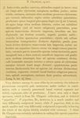

Click on images to enlarge
{kind=link}

Fig. 1. Paropsis chapuisi, description
Name
Trachymela chapuisi (Blackburn, 1896)
Synonyms
= Trachymela ignorata Weise
Corresponds to
I do not have a photograph of the type, but suspect that chapuisi is the same as Ta68 (= T. latipes) - see discussion in Diagnosis and Notes.
Diagnosis and Notes
Blackburn (1896) deals with P. chapuisi as part of his subgroup i (i.e., those species with "strongly marked characters"). Within that group, he characterises it as:
AAA. Prosternum normal, but other characters exceptional, as follows:-;
BBB. The exceptional characters lie in the elytral epipleurae;
CC. Inner (horizontal) part of epipleurae nearly reaches the apex as a distinct ledge;
D. Basal ventral segment coarsely punctured;
E. Sides of prothorax strongly explanate;
F. underside testaceous (not black).
This species is placed next to P. latipes in the key, with the colour of the underside being the differentiating character. Some specimens of P. latipes (=Ta68) are not completely black ventrally - I have a (fully hardened) male specimen from Narbethong (Victoria) whose ventral surface is completely mid-brown, with legs slightly paler. Its dorsal surface has just a very few scattered and small verrucae towards the apex of the elytra. It is perhaps notable that Blackburn describes chapuisi from a single specimen that has "papulosa Chapuis" as one of its labels. Certainly, specimens of T. latipes can look quite similar to T. papulosa Erichson superficially.
The other characters that Blackburn mentions in his description to distinguish chapuisi from its "near allies" are the coarsly punctured basal ventral segment and widely explanate sides of the prothorax. Both of these are somewhat variable in latipes, and though I have not checked these characters in the chapuisi type, I suspect that it would fit within the range of variation of latipes. Certainly, his key indicates that both latipes and chapuisi have a strongly explanate pronotum.
Type specimen
Location: BMNH
Label data: /“Type” (red-bordered circle)/ “6148 Aust. T”/ “Blackburn coll. 1910-236.”/ “Paropsis chapuisi Blackb.”/ “papulosa Chapuis”/.
Male; Length: 10.68 mm. A large, explanate Trachymela, brown, with a few scattered small black verrucae towards the elytral apex.
Original description
Translation of original description (Figure 1) by ChatGPT, 03/2026:
♂. Broadly oval, moderately convex, the greatest height (seen from the side) placed well before the middle of the elytra; less shining; chestnut, the antennae beyond the middle, prosternum, and the verrucae of the elytra darkened; head rather closely and finely punctulate; prothorax more than twice as wide as long (about 2½ to 1), widened far beyond the middle from the apex, rather closely and fairly finely, evenly (but somewhat more coarsely at the sides) punctulate, behind the apex distinctly transversely impressed, sides rather broadly flattened and strongly arcuate, posterior angles absent; scutellum lightly and very sparsely punctulate; elytra beneath the humeral callus distinctly triangularly depressed, a little behind the base slightly but distinctly broadly transversely impressed, rather closely and strongly, fairly evenly (scarcely more coarsely toward the sides) punctate, with a few small verrucae arranged toward the apex; marginal area broad, separated from the disc by a clearly impressed groove, slightly interrupted before the middle but continuous from there to the apex; humeral callus at its inner margin scarcely more distant from the suture than from the lateral margin; inner (horizontal) part of the epipleura nearly reaching the apex as a distinct dorsal extension; basal ventral segment strongly somewhat coarsely punctate, apical segment emarginate, the incision with a nearly vertical posterior face. Length 5 lines (~10.6 mm), width 4¼ lines (~9 mm).
References
Blackburn, T. 1896, "Revision of the genus Paropsis. Part I", Proceedings of the Linnean Society of New South Wales, vol. 21, no. 4, 637-693 (page 649). [nec. Duvivier, Notes Leyd. Mus., 1884, page 94]
Weise, J. 1916. Results of Dr. E. Mjöberg's Swedish scientific expeditions to Australia 1910-1913. 11. Chrysomeliden und Coccinelliden aus West-Australien. Arkiv för Zoologi 10(20): 1-51 (page 35) [nom. novem. for P. chapuisi]
Copyright © 2026. All rights reserved.